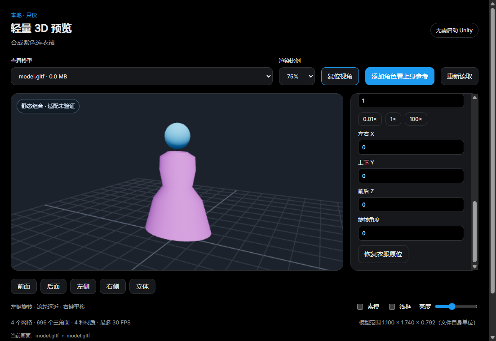

轻量 3D 预览：看衣服款式，添加角色作静态参考
适用于带有“添加角色看上身参考”按钮的预览版本。新增操作暂用中文。此功能在本机运行，无需启动或安装 Unity，也不需要 AI、API 密钥或联网。
你可以先单独看衣服的形状和可读取的贴图，再添加库里的角色模型，把两份模型放在同一画面中比较。这属于静态组合预览，不能作为 Unity 真实试穿、实际适配、穿模检测或安装成功的证明。
1. 先分清三个名字
- 素材卡片：主界面里的一张卡片，可能对应一个文件夹、一个压缩包，或合并展示的多条路径。
- 模型文件：真正包含三维形状的文件，例如
.fbx、.glb、.gltf、.obj。一张卡片中可能有多个模型，需要再选一次。 - 角色素材与角色模型：“角色素材”先选哪张本地卡片，“角色模型”再选这张卡片里的哪个模型文件。先选一个文件夹，并不表示其中所有文件都会合成为角色。
.prefab 是 Unity 预制件配置，.mat 是 Unity 材质配置，商品截图是二维图片。只有这些文件、没有可读取的模型文件时，程序无法凭空生成三维画面。
2. 打开一件衣服
- 在主界面的“全部素材”中找到衣服。需要时先用名称搜索。
- 用鼠标左键点一下卡片，在右侧“素材详情”中点击 3D 预览。也可以对卡片点鼠标右键，再点 3D 预览。右键只选择一件素材时使用此项。
- 会打开一个单独的“轻量 3D 预览”窗口。主界面仍然保留。
- 看窗口上方的 查看模型 下拉框。如果只有一个模型，程序会自动选择；如果有多个，点开下拉框，选你要看的衣服模型。
- 等待“正在读取模型与贴图…”结束。成功后，中间出现可旋转的模型，下方显示网格、三角面等信息，以及 当前画面：文件名。
怎么判断有没有选对：看“当前画面”中的文件名，而不只看下拉框刚选中的名字。新文件读取失败时，程序可能仍保留上一成功画面；错误提示会说明这一点。
如果右键没有此项，打开“设置与备份 → 右键菜单”，确认“3D 预览”没有被隐藏。也可以直接使用素材详情中的固定按钮。缺失的文件或只有云端、尚未下载到本地的素材不能直接预览。
3. 在画面中怎么操作
把鼠标放在中间的三维画面上：
| 操作 | 作用 |
|---|---|
| 按住鼠标左键并移动 | 围绕模型旋转观察 |
| 滚动鼠标滚轮 | 拉近或拉远镜头，不改变衣服实际尺寸 |
| 按住鼠标右键并移动 | 平移镜头 |
| 点击“前面／后面／左侧／右侧／立体” | 快速切换观察方向 |
| 点击“复位视角” | 重新把当前模型放进镜头范围，不恢复衣服的位置与缩放 |
这些方向按预览场景的坐标定义。作者可能把模型朝向做成另一边；如果点击“前面”看到背部，可以改用“后面”，或调整衣服的旋转角度。
4. 添加角色，看静态上身参考
先准备好本地角色原版模型。角色与衣服都需要是你有权使用的文件。商品页面声称支持某个角色，不表示你的本地目录中一定有对应版本。
- 先按第 2 节显示衣服。
- 点击预览窗口上方的 添加角色看上身参考。
- 会展开“角色＋衣服”设置。在 查找角色素材 中输入角色名称，例如你自己的卡片名称。
- 点开 角色素材，选择库里对应的本地角色卡片。优先选择原版角色所在卡片，避免误选头发、眼睛或另一件衣服。
- 等待“正在查找角色模型…”结束。
- 如果出现 角色模型 下拉框，选择角色的完整身体模型文件。只有一个模型时会自动选择；多个模型不会替你决定。
- 等待读取完成。成功后，衣服和角色出现在同一画面中，画面标有 静态组合 · 适配未验证，“当前画面”会显示两个文件名。

上图的简单角色和连衣裙是专门生成的演示模型。用于说明“同场显示”和操作位置，不代表任意商品都能完整还原，也不是效果图或重绘界面。
没找到角色卡片时，先回主界面，把角色文件夹拖进素材库，或用“手动添加素材”登记文件夹，再回到预览窗口搜索。登记和预览都不会替你安装 Unity 工程。
角色文件很多时，可以先看文件名和目录位置，选择身体或完整角色的模型。Hair 往往是头发，Body 往往是身体，但作者命名各不相同，必须根据实际画面核对。列表不是 Unity 场景层级，不能仅凭名称认为已选中完整预制件。
收起设置与移除角色是两回事：点设置顶部的“收起”只收起面板，组合画面可以继续显示。要回到单独看衣服，重新展开面板，在“角色素材”中选择 不添加角色。
5. 隐藏角色原来的衣服或查看某一层
组合设置中有两个总开关：
- 显示衣服：控制最初打开的素材模型。
- 显示角色：控制后来添加的参考模型。
这里的“衣服”“角色”指两个模型的位置分工，程序没有自动验证它们的真实品类。
角色模型本身可能带着默认衣服。可以展开 角色部件／隐藏原有衣服：
- 找到可能属于原有衣服的部件名称。
- 取消左边的勾选，观察消失的部分。
- 取消错了就重新勾选。比如身体也消失了，应立即重新勾上这一项，再检查其他部件。
此列表显示作者划分的网格部件，最多展示 100 项。名称可能是英文、日文或含义不明的编号。若原衣服和身体被作者合在同一个网格里，这里不能把它们再拆开；也不能根据一个部件名称自动判断该隐藏什么。
取消勾选只影响当前预览，不删除角色文件、不改变 Unity 里的显隐，不创建游戏内的圆盘菜单。
6. 衣服太大、太小、偏位或反了，怎么调整
程序默认保留两份文件的原坐标与尺寸，没有把衣服拉成角色的高度。作者的单位、原点或朝向不同，可能使两份模型暂时分开，或看起来相差很大。
展开 调整衣服位置与尺寸。每次修改数值后，按 Enter，或点一下输入框外的地方，才会提交这个数值。空值、非数字或超出范围的值会恢复为原值。
| 项目 | 表示什么 | 怎么试 |
|---|---|---|
| 衣服缩放倍数 | 1 为原尺寸，0.5 为一半，2 为两倍 | 先小幅修改，观察整体大小 |
| 左右 X | 沿预览场景的 X 轴移动衣服 | 先试小的正值或负值，确认方向 |
| 上下 Y | 沿 Y 轴移动衣服 | 用于把衣服向上或向下挪 |
| 前后 Z | 沿 Z 轴移动衣服 | 用于前后位置；镜头转过后，屏幕上的方向也可能变化 |
| 旋转角度 | 绕竖直方向转动衣服，单位为度 | 前后反了可试 180 或 -180 |
快速按钮 0.01× / 1× / 100×用于检查常见的文件单位差异，不会判断哪一个是正确比例。只有确定差异很大时再试；选错了点 恢复衣服原位，会把缩放恢复为 1、位置恢复为 0、旋转恢复为 0。恢复后可以再点“复位视角”。
允许范围是：缩放 0.0001–10000；X、Y、Z 各为 -100000–100000；旋转为 -360–360。这些是文件自身单位，不能直接理解成米或厘米。下方“模型范围”是载入时计算的范围，不是服装尺码或已验证的人体尺寸。
如果两个模型的 A／T 姿势、体型或骨骼不同，整体移动和缩放无法把所有部位同时对齐。例如腰能对齐但袖子仍不合适，可能是模型版本或姿势不同，不是继续放大就一定能解决。请回到商品说明核对适配版本，真实装配仍在 Unity 中完成。
7. 减轻电脑负担和查看材质
- 渲染比例：默认 75%。画面卡顿时试 50% 或 25%。降低的是画面分辨率，不改模型、贴图文件或衣服尺寸，也不会减少模型三角面。
- 素模：用统一的材质看形状，适合在贴图不完整时观察轮廓；不代表商品原本没有颜色。
- 线框：显示网格边线，帮助观察几何结构，不是自动穿模检查。
- 亮度：调整预览画面的明暗；不改原材质。
- 播放内置动画：仅在单模型确实带有可读取动画时出现。角色与衣服组合时不会播放，防止两份独立骨架产生“角色动了、衣服没跟上”的误导。
程序最多按 30 FPS 绘制，实际帧率取决于电脑和模型。静止时按需绘制，切到别的窗口时暂停绘制。大型文件仍可能需要等待；可以点击“取消读取”，保留上一次成功画面与调整，再选择较小的模型或点击“重新读取”。没有上一成功画面时不会凭空显示模型。
衣服调整、选择和部件显隐属于本次预览，不写回原文件，也不是资料库中的长期装配方案。关闭预览后需要重新选择与调整。
8. 支持哪些文件，哪些情况会被限制
| 本地内容 | 如何使用 |
|---|---|
| FBX、GLB、glTF、OBJ | 从卡片中选择对应模型 |
| ZIP、Unitypackage | 只读查找包内支持的模型与本地依赖；不安装到 Unity、不自动解压到原素材目录 |
| RAR、7z | 本预览不直接解码模型；使用你已有的解压目录，或自行解压到另一个合适位置后登记 |
| Unity 工程 | 读取其 Assets 内可预览的模型，不读取并还原当前打开的场景 |
| 只有 Prefab、材质、截图、PSD | 这些不能单独代替模型；需要找到实际模型文件 |
| 云端条目 | 先正常下载本地文件并登记，再预览 |
有外部贴图、.bin 或 .mtl 依赖时，尽量登记完整素材文件夹，保留作者的相对目录结构。单独登记一个 FBX 等文件，只授权读取这个文件，不会顺便读取旁边的其他文件。 单文件模型因此可能显示不出外部贴图；glTF 缺少必需的 .bin 时可能完全无法显示。
模型引用外网地址时，预览不会自动下载这些资源，也不会为补贴图访问你的其他目录。Unity .mat、lilToon、其他专用着色器与 Prefab 的材质设置不自动还原。
当前只接受网格模型，不显示点云、线条或精灵图元；混有这些内容的模型会明确提示不支持。FBX 在文件名字段内直接塞入图片数据的特殊写法也不支持；标准的内嵌贴图仍按资源预算读取。
为避免文件过大影响应用，预览有上限，包括单个模型 64 MiB、组合资源总量 128 MiB、贴图尺寸 4096×4096、贴图解码预算和组合总计 300 万三角面。两个模型合起来也受总预算限制，不是每个模型都可以再用一份完整预算。目录太深、文件太多、压缩包加密、格式不支持或索引超时时，会显示提示或只列出已经找到的模型。
9. 出问题时先看这里
| 看到的情况 | 先这样处理 |
|---|---|
| “没有找到可预览的模型” | 检查卡片文件中是否真的有支持格式；只有图片和 Prefab 不够；RAR／7z 改用已有解压目录 |
| 模型列表有很多项 | 选具体适配版本；角色列表优先试完整身体模型，衣服列表不要误选其他版本或小配件 |
| 选择了新文件，仍看到旧画面 | 看错误提示与“当前画面”的文件名；上次成功画面可能被保留。更换文件或点击“重新读取” |
| 一片灰色、部分贴图缺失 | 先取消“素模”；再检查完整素材文件夹及贴图依赖。Unity 专用材质本来就可能与此处不同 |
| 只看到衣服或只看到角色 | 检查“显示衣服／显示角色”、是否确实选了“角色模型”；再点复位视角，检查原始单位差异 |
| 两者大小差很多、离得很远 | 恢复衣服原位后检查单位、位置和适配文件，再手动调整；不要根据这个画面宣称自动适配失败或成功 |
| 衣服与身体穿插、手臂方向不一致 | 核对角色版本与 A／T 姿势；这里不会自动变形、合骨架或修复穿模 |
| 提示模型文件已变化、位置或授权范围已变化 | 关闭预览，回主界面核对卡片及文件位置，再重新打开；不要把失败理解成程序已经修改文件 |
| 超过大小、贴图或三角面预算 | 选较小的单个模型、优化后的副本，或使用 Unity 等专业工具；降低渲染比例不会解除文件预算 |
| 显卡预览上下文中断 | 关闭本次预览后重开，尝试降低渲染比例；资料库可以继续使用 |
仍有问题时，反馈应用版本、选择的模型格式、错误文字和“当前画面”文件名。截图可以只截预览窗口，避免包含聊天、凭据或私人路径；无需上传付费模型本体。
10. 这张画面能说明什么
它可以帮助查看可读取的款式、轮廓、贴图与两份模型大致重叠的静态感觉。它不会自动绑定骨骼、匹配体型、调整 BlendShape、建立 MA 菜单、还原物理或修复穿模，也不会把调整结果安装到角色。
真正的 Unity 试穿与发布效果，需要在相应 Unity 工程中，按原作者说明选择正确 Prefab、适配版本、材质、身体遮罩及依赖，再检查装配。预览中的“静态组合 · 适配未验证”始终应保留这个含义。